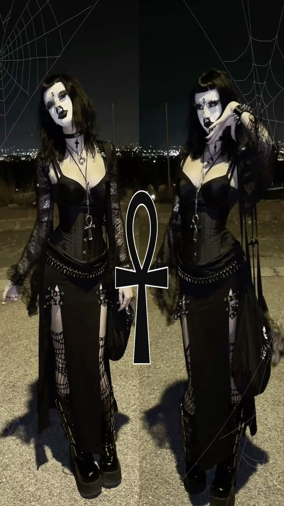

☆ ° · ✦ · ° ☆
почему мне нравиться готский стиль?
мне очень нравиться их макияж
не будь я бедным студентом то хотела бы
столько же тратиться на подводку и белый грим
☆ ° · ✦ · ° ☆

обожаю их образы
хотелось бы иметь столько же украшений как у них
☆ ° . ✦ . ° ☆
любимые готические фильмы
Dracula
Elvira
Dorian Gray